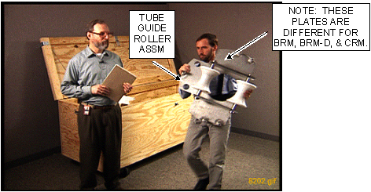
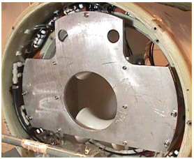

Operating Documentation
Direction 5133330-3, Rev# 14
Module Version 13.0, Version Date 11/2/10
Operating Documentation |
| ||||
| Personal injury or equipment damage may result if taken too close to the magnet. | ||||
| The jack on the Tube Jacking Assembly is ferrous. | ||||
| Keep as far away from magnet bore as possible when removing from magnet room. Always keep the tube jacking assembly mounted and screwed to the Aluminum coil cradle when used in the magnet room. |
| ||||
| Personal injury and equipment damage! | ||||
| Strong Magnetic Field. | ||||
| When servicing any magnetic equipment, it is critically
important that the service engineer consciously plan the path to be
taken when moving highly ferrous devices in the magnet environment.
the path should be as far from the magnet as practical and avoid high
flux density fields. Safety Requirements:
When planning a service path, it is critical that the path be clear and sufficiently wide. Ensure that there are no trip hazards, obstacles, clutter, slippery surfaces or other items even partially restricting the path. If there are portable obstacles in a path, remove them from the area and replace them after the service action is completed. It is required to walk the path prior to beginning service to ensure that there is sufficient space through which to pass for yourself and the object being serviced. |
| ||||
| Dangerous Work Area! | ||||
| Use of heavy equipment for coil removal and replacement presents hazards to all personnel in the area. | ||||
|
| ||||
| Personal Injury or Equipment Damage! | ||||
| Either could result if the brakes are not properly set on the cart. | ||||
| Make sure to watch and guide all cables attached to the Gradient Coil during the removal process. Damage to cables or Gradient Coil may occur if a cable is pinched, cut or snagged. |
| ||||
| Personal Injury or Tool Damage! | ||||
| Watch for tube deflection when adjusting the jacking screws. | ||||
| Any tube deflection indicates the Gradient Coil is in contact with the warm bore, thereby resisting free motion. |
| ||||
| Personal Injury or Equipment Damage! | ||||
| Make sure the weight of the Gradient Coil has transferred from the tube to the cradle/cart at the appropriate place in this procedure. | ||||
| Personal injury or equipment damage may result if the load was not transferred. |
Perform LOTO for appropriate PDU:
(For Signa EXCITE HD 1.5T & 3.0T, 12.x Systems - Directions 5133315 & 5133330) PHOENIX Power Distribution Unit (ACGD and GRFD-OpenSpeed) or PHOENIX PDU with Plastic Breaker Cover-Subsystem Lockout
(For Signa EXCITE 3.0T, 11.x Systems - Direction 2389160) PHOENIX Power Distribution Unit (ACGD and GRFD-OpenSpeed), PHOENIX PDU with Plastic Breaker Cover-Subsystem Lockout, Lockout / Tagout for Pen Panel, Patient Blower, and Magnet Room, or Lockout / Tagout for Gradient Amplifier / PDU.
(For Signa EXCITE 1.5T, 11.x Systems - Direction 2333500) Standard Power Distribution Unit (PDU), Compact Power Distribution Unit (PDU), TEAL Power Distribution Unit (PDU), PHOENIX Power Distribution Unit (ACGD and GRFD-OpenSpeed), or PHOENIX PDU with Plastic Breaker Cover-Subsystem Lockout.
Changes were made to the Gradient Insertion Tool (P/N 2164744-6 and greater). Use the parts described below when replacing either the BRM or TRM.
Attach the Mounting Plates (P/N 5161983 and 5161985) to either the BRM or TRM Gradient Coil, and secure them to the Gradient Coil using the M10 x 120 studs. Thread the studs (located as shown below) at least 1/4 inch (6 mm) into the Gradient Coil.
Attach the Rear Plate to the magnet as shown, and secure it to the magnet using M10 x 80 mm studs, washers and M10 nut. (There are standoffs on this plate that should remain in place.)
Retrieve the Male Insertion Tube (2284929) and XRMB Tube Standoff (5191626).
Attach the Tube Standoff to the Male Insertion Tube using the 4 inch, 0.375-16 UNC Hex Socket Screw (5303993) included in the Gradient Coil Insertion and Lift Kit.
Once the Standoff is secured to the Tube, attach the Tube Pilot Shaft to the Standoff as shown.
Proceed to the next section.
Remove the bridge and the front and rear endbells.
Disconnect the Water Chiller as described below.
Drain the coolant from the Body Coil and coolant hoses as described below.
Remove the two Tube Guide Roller Assemblies from the crate as shown. (It may be necessary to exchange the rollers to the appropriate Plate Assembly; the TRM uses the BRM-D plates shown in Illustration 7.)
Illustration 6: Tube Guide Roller Assembly

Illustration 7: BRM-D Plate Assembly Installed on Patient End

Install the Tube Guide Roller Assembly onto the patient end of the Gradient Coil shown above. (Each assembly requires four bolts and one stud.)
Use the two M10 x 120 studs from the kit, and thread them at least 1.4 inch (6 mm) into the top hole location on the Gradient Coil. (The studs will support the Tube Guide Roller Assembly and assist the alignment of the remaining bolts.)
Use the M10 x 80 mm bolts from the kit and a 17 mm socket and ratchet to attach to the studs.
Remove the Tube Support Plate Assembly from the crate as shown.
Adjust the Alignment Bearing to center position (as shown) as viewed from the side with the round cut-out.
| ||||
| Do NOT apply force to any stud or bolt used to secure the insertion tool hardware to the magnet Interface Ring or Gradient Coil. The potential exists for a stud or bolt to gall the threads on these parts. | ||||
| NOTE: | If the magnet has the new Black Turtle Bracket shown below, spacers must be used between the Turtle Bracket and the Tube Support Plate. |
Go to the rear of the magnet and install the Tube Support Plate onto the magnet Interface Rings as follows:
Remove screws from the Turtle Bracket so the Tube Support Plate can be installed as shown above.
Install four of the M10 x 60 studs into the Turtle Bracket openings where the screws were removed. Apply Never Seeze (P/N 46-294151P8) to the studs that will thread into the magnet.
| ||||
| Bushings and washers must be used, or damage could occur. | ||||
Install the washer and bushing onto the studs as shown below.
Proceed to Step 8.d.
For magnets with a Metallic Support Ring, go to the rear of the magnet and install the Tube Support Plate onto the magnet Interface Ring as follows:
Remove the bolts (shown below) from the Interface Ring at the rear of the magnet so the Tube Support Plate can be installed.
Install four of the M10 x 60 studs into the Interface Ring openings as shown, and apply Never Seeze (P/N 46-294151P8) to the studs that will thread into the magnet.
| ||||
| Bushing must be used, or damage could occur. | ||||
Place the bushing on the stud a shown.
Tighten the stud that will support the weight of the Tube Support Plate Assembly as shown.
Position the Tube Support Plate Assembly to the ear of the magnet as shown.
Place the washer and nut on each stud from the Plate Assembly (as shown below) and secure the plate.
Adjust the Alignment Bearing to the center position as viewed from the side with the square cut-out as shown below.
Remove the Male Tube Assembly from the crate, and remove the cotter pin from the shaft.
| ||||
| Be careful not to force the shaft through the alignment bearing. Make vertical or horizontal adjustments to bring the alignment bearing in alignment with the tube shaft. | ||||
Slowly install the tube (shaft end first) through the front Tube Guide Roller Assembly on the patient end, and guide the shaft through the alignment bearing that is located on the Tube Support Plate on the Service end of the magnet.
View the video for tube insertion of the BRM to become familiar with the process.
Install the cotter pin after the shaft is in place.
| ||||
| Personal injury or equipment damage may result if taken too close to the magnet. | ||||
| The jack on the Tube Jacking Assembly is ferrous. | ||||
| Always keep the Tube Jacking Assembly mounted and screwed to the aluminum coil cradle when used in the magnet room. |
Remove the Tube Jacking Assembly (shown below) from the crate.
Install the Tube Jacking Assembly onto cradle/cart, and secure with the bolt through Tube Jacking Assembly baseplate as shown below.
Remove the Gradient Coil cradle fasteners, two per side, from the cradle as shown below.
Move the empty cradle/cart assembly into the Magnet Room, and position the cart in front of the magnet, centering the cart left to right with respect to the patient bore.
Make sure the Tube Jack Assembly is physically centered and the left/right adjustments are at a nominal setting before starting the next step.
Use a 5/16 inch right-angle Allen wrench to tighten the Tube Jack Assembly to the cart.
Remove the Female Tube Assembly from the crate.
Support the Female Tube Assembly on the Tube Jack Assembly, and thread it onto the Male Tube Assembly as shown below.
Do not overtighten the two poles, as it may be difficult to separate after coil replacement.
Use a 19 mm socket to adjust the cart height (shown below) so the end of the cradle is the same height as the warm bore of the magnet and flush against the end flange as shown in Illustration 24.
Release the hand lever on the cart handle to set the brakes so the cart will not move after the cart is aligned to the magnet bore.
| ||||
For the next two steps, the coil is still attached to the magnet
interface rings of the magnet with the gradient isolation brackets.
| ||||
Operate the jack to raise the tube, and watch for the tube to make contact with the upper roller on the front Tube Guide Roller Assembly. Make sure there is a small amount of resistance to the upward movement of the tube. (The top roller should not be able to rotate.)
Go to the rear of the magnet. Adjust the Alignment Bearing in the vertical direction, and watch for the tube to make contact with the upper roller on the rear Tube Guide Roller Assembly. Continue to raise the Alignment Bearing until the back end of the Gradient Coil starts to rise off of the cradle.
| NOTE: | When this happens, the load at the back end of the Gradient Coil is transferred from the cradle to the Support Tube and magnet. |
Back out the two (one on each side) radial supports, and remove the mounting pads from the upper portion on the front of the Coil. See illustration below.
Remove the four screws shown below, and remove the Gradient Support Bracket from both ends of the magnet.
| NOTE: | If using a newer Gradient Insertion Tool (P/N 2164744-6 or greater), the Gradient Coil Roller Assemblies are not needed as the Jack Assembly is thinner. |
Remove the two Gradient Coil Roller Assemblies (shown below) from the tool crate.
Remove the two screws (shown below) that attach the Water Manifold block to the inner coil face.
Place the Roller Assemblies on the coil as shown below, one on each side at the Patient end.
Check the tube with a level on top of Female Tube Assembly. Make any adjustments with either the jack in the front or the Alignment Bearing in the rear.
At the front of the magnet: Operate the jack to raise the tube and watch for the Gradient Coil bracket to raise up off of the end flange bracket. (A gap of 1/8 inch or 2 mm is sufficient.) Make sure there is no contact with the warm bore or in bore passive shims.
Go to the rear of the magnet. Adjust the Alignment Bearing in the vertical direction, and watch for the Gradient Coil bracket to raise up off of the end flange bracket. (A gap of 1/8 inch or 2 mm is sufficient.) Make sure there is no contact with the warm bore or in bore passive shims.
Go to the front of the magnet. Verify there is sufficient clearance all around the Gradient Coil for removal onto the cradle and cart.
| ||||
| Personal injury or equipment damage may result if the brakes are not set properly. | ||||
| Make sure the brakes are set on the cart before performing the next step. | ||||
| Make sure to watch and guide all cables attached to the BRM during the removal process. Damage to cables or Gradient Coil may occur if a cable is pinched, cut or snagged. |
| ||||
| The following step requires three FEs: one in the rear to push the coil and guide the cables through the bore and two in front to pull on the coil. | ||||
Slowly pull the Gradient Coil forward on the tube, and watch the clearance around the coil to make sure it is concentric and level with the bore.
| NOTE: | Minimize the rotation of the coil on the tube. Damage to the roller assemblies could result. |
Make sure the roller brackets are in line with the shipping bracket holes on the cradle. (This alignment is necessary for installing the shipping blocks later in the procedure.)
| ||||
| Personal injury or damage to the tool could result. | ||||
| Watch for tube deflection when adjusting the jacking screws in the next step. | ||||
| Any tube deflection indicates the Gradient Coil is in contact with the warm bore, thereby resisting free motion. |
Slowly lower the jack to allow the Gradient Coil weight to transfer to the Gradient Coil rollers.
| ||||
| Personal injury or equipment damage may result if taken too close to the magnet. | ||||
| The jack on the Tube Jacking Assembly is ferrous. | ||||
| Keep as far away from magnet bore as possible when removing from magnet room. |
Remove the bolt from the Tube Jack Assembly baseplate; remove the jack and take it out of the Magnet Room. (The cradle is now clear to allow the Gradient Coil to move forward on the cart.)
With three FEs pulling from the front, move the Gradient Coil over the cradle so it is centered from front to back on the cradle.
| NOTE: | It may be necessary to lower the cart to allow the back end of the Gradient Coil to clear the cradle. |
Important: Make sure the shipping bracket holes for the gradient coil (shown below) will line up with the holes on the cradle of the cart before removing the rollers. You may have to rotate the Gradient Coil and/or move forward or back on the cradle to align the holes.
Slowly lower the back end of the Gradient Coil onto the cradle by lowering the alignment bearing at the back end of the magnet.
| ||||
| Personal Injury or Equipment Damage! | ||||
| Make sure the weight of the Gradient Coil has transferred from the tube to the cradle/cart before proceeding to the next step. | ||||
| Personal injury or equipment damage may result if the load was not transferred. |
Adjust the jacking screws on the Roller Block for wheel removal, remove the rollers and pins, then adjust the jacking screws to lower the Gradient Coil to the cradle.
Remove the front and rear spacers on the gradient coil and make a note to avoid interchanging them since the front spacer must go on the front location of the replacement coil as shown below.
Remove the 15 mm spacer by removing the screw from the 90° hole as shown.
Remove the Gradient Coil Roller assemblies shown below.
Replace the two screws (shown below) that attach the water manifold block to the inner coil face.
Get the rope supplied in the kit, and route it under the support tube between the end flange of the magnet and the Gradient Coil.
Attach the rope the enclosure frame brackets on the Cryostat.
Adjust the height of the rope so it will provide support for the tube during the disassembly process.
Three FEs are required and should be positioned as described for the following step:
Unthread the tube leaving one section in the bore (supported by the rope and Tube Support Plate Assembly) and leave the other section in the Gradient Coil on the cart.
Release the brake on the cart, and slowly back the cart with the Gradient Coil out of the Magnet Room.